Crash Course in jQuery
Nolan Erck
South of Shasta Consulting
About Me
- Software Consultant (southofshasta.com)
- Software Development, Training, Design
- ColdFusion, C++, Java, jQuery, PHP, .NET, HTML5, Android, SQL, etc...
- Manager, SacInteractive User Group
- Reformed Video Game Developer (Grim Fandango, SimPark, StarWars Rogue Squadron, etc).
- Music Junkie
Today's Agenda
- What is jQuery?
- Installing jQuery
- CSS & Anonymous Functions Primer
- Some Basic Examples
- Events
- Animation
- Loops
- Other Fun Stuff
- Questions, etc
Code And Slides
GitHub: nolanerck
crash-course-in-jquery
3 Layers in a Client-side Web Page
- Content - The HTML itself, the words on the page.
- Layout / Presentation - CSS, the fonts and colors used, location, etc.
- Behaviors / Business Logic - JavaScript, the stuff your web page “does”, the interactive things.
3 Layers in a Client-side Web Page
- HTML - straight forward, easy, portable markup.
- CSS - flexible, stays out of the way, does its job well.
- JavaScript - is terrible (in parts).
- Enter jQuery
What is jQuery?
- jQuery is JavaScript
- Makes JavaScript tasks easier.
- Anything you do in jQuery, can do in JavaScript.
- It will just take more code, time, less browser compatibility, more re-work, etc.
- Been around for many years.
- Ubiquitous with modern web development.
- Default go-to tool for many current projects.
What are some ways that JavaScript is terrible?
We used to write code like this...
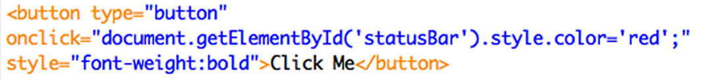- What's wrong with this picture?
- No separation of concerns.
- Content, presentation, behavior jumbled together.
- Can't easily swap in new business logic.
- Cluttered HTML mixed with CSS.
- JavaScript is harder to debug. And on, and on...
Then we learned this was better...
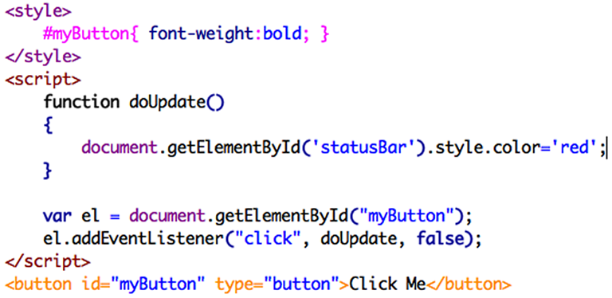- Concerns are separated.
- Easy to the 3 layers.
- And that was a big improvement...
Except maybe for this part
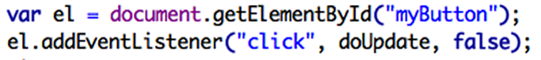- When does this code run?
- When the page first loads?
- Are we sure exactly WHEN that is?
- No. But we can fix that easily enough...
So let's try this...
- What happens if we have a second button in our app that needs similar code? 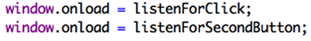
- That LOOKS right, but won't actually work!
- JavaScript only allows ONE window.onload to fire per page. So one of these will be ignored, and our app is now broken.
- (Some browsers play nicely, but not all of them.)
Creating a Simple Ajax Request...
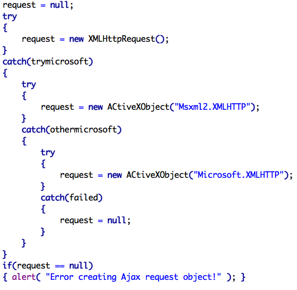Other cross-browser problems*...
- Animations
- Hiding / showing blocks of content
- Ajax GET / POST requests
- Form posts via JavaScript
- Form field validation
- And on and on...
(*or just really annoying to write and debug.)
There's Gotta Be a Better Way!
- Enter jQuery
- It solves that weird onLoad problem, and lots of cross-browser quirks...
- Makes many other UI related tasks easier...
- And generally makes many JavaScript tasks less annoying.
How to install jQuery
- Go to jQuery.com
- Click “Download jQuery”
- Stick the jquery.js file in your website
- Do this:
- <script src="jquery.js"></script>
Boom. Done.
CSS Primer
- CSS Selectors
- #ID - single, unique element
(Don't use the same ID twice on a page.) - .class - multilpe elements
- Can also use the tag name
(div, button, img, etc) - Can mix and match to get specific
(form#signup-form input.requiredField) - Example: CSSPrimer
Anonymous Functions
Regular JavaScript function, written 2 ways:
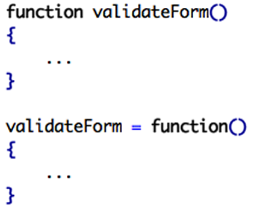Anonymous Functions (cont)
- Our earlier example: 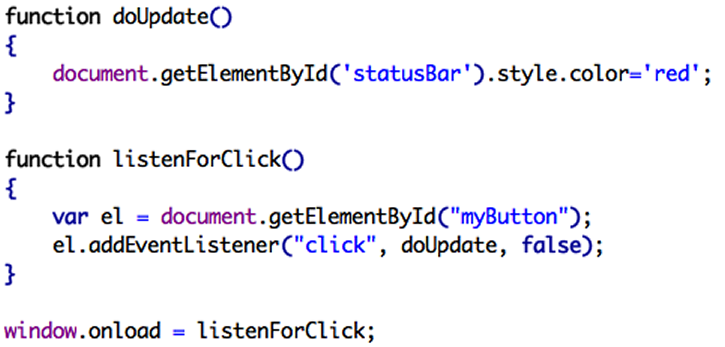
- Note that doUpdate() only contains one line of code.
- Also note addEventListener(...doUpdate...)
no parenthesis when “calling doUpdate
Anonymous Functions (cont)
- Another way to do the same thing: 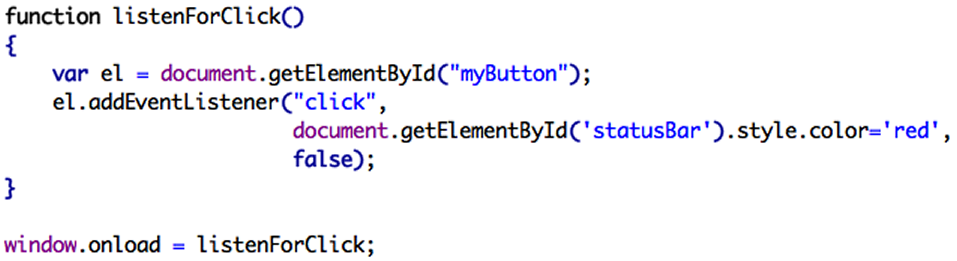
- Got rid of doUpdate()
- Now just have the code in-line as the 2nd argument to addEventListener()
Anonymous Functions (cont)
- Or, to get fancier... 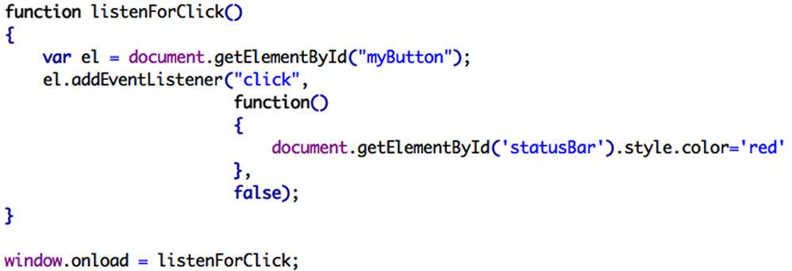
- The 2nd argument is now an anonymous function.
- A function is just “a block of code”.
- We're using “a block of code” here.
- We just didn't bother giving it a name (e.g. “doUpdate”)
So what's that weird $ thing?
- The jQuery operator.
- How you interact with jQuery. 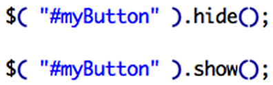
$ + CSS Selectors
-
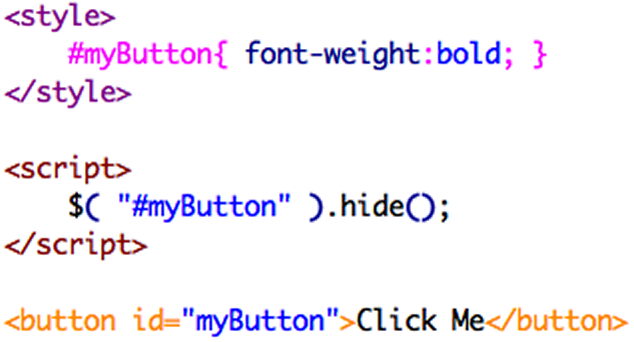
- The CSS selector we use to style the button is the SAME code we use to have jQuery do something to the button.
CSS selectors
- Pretty much how you do 90% of things in jQuery
- #ID or .class or mix and match, just like CSS 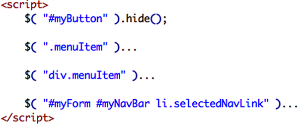
More CSS selectors
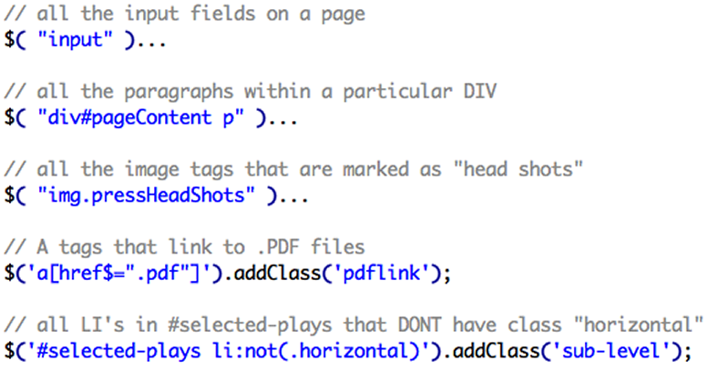Back to window.onload...
- Old way, could only do one window.onload per page, all others would silently fail.
- The jQuery way to do it: 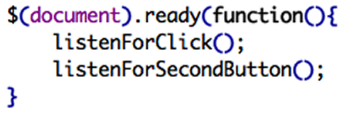
$(document).ready()
- Can have as many as I want.
- jQuery queues them up in the order they're found (top – down in the page)
- Fires them all in that order, after the page has been loaded.
- Safer than window.onload
- Safer than just using in-line JavaScript (e.g. our first example).
Events
- All the same JavaScript events we're used to – click, mouseover, mouseup, form submit, etc
- Plain JavaScript: 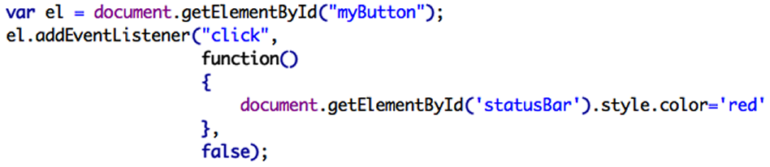
- The same thing in jQuery:

.each()
- jQuery way to loop over things... 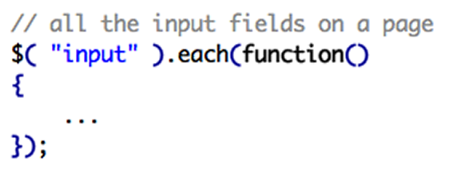
Hiding Content
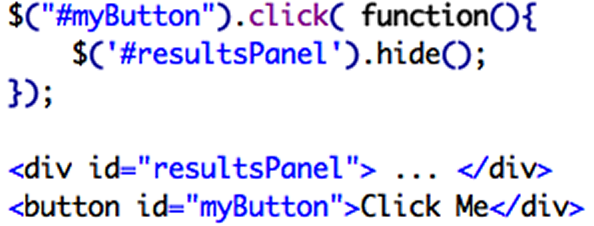Showing Content
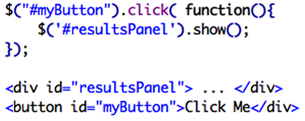Toggling Between Hide and Show
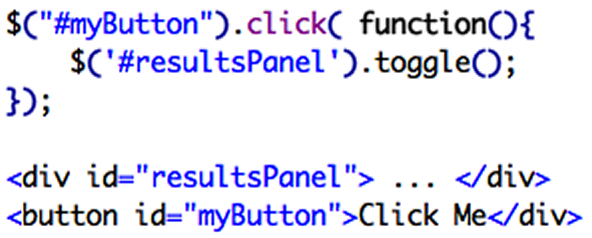Anonymous Functions
function helloWorld()
{
// a regular JavaScript function
// named helloWorld
}
helloWorld = function()
{
// a regular JavaScript function
// named helloWorld
// that can be used as a variable too
}
Anonymous Functions
-
validateForm = function() { // make sure our form is valid before submitting } $( "#submit" ).on( "click", validateForm ); - You'll see this a lot in jQuery. You only use validateForm once. Can be lazy and do this:
$( "#submit" ).on( "click", function() { // make sure our form is valid before submitting }); - Example: AnonymousFunctionsPrimer
jQuery Examples
- Hello World
Putting It All Together
Infinite Scrolling Demo
What's The Catch?
- Debugging is a little different.
- $(this) takes getting used to.
Other Info
- jquery.com - official reference
- Book: Learning jQuery, Packt Publishing
- Stack Overflow
- Bootstrap uses jQuery
- For most browser compatibility use 1.x series
Questions? Comments? Need Consulting?
- southofshasta.com
- nolan@southofshasta.com
- Twitter: @southofshasta
- Github: nolanerck
Thanks!